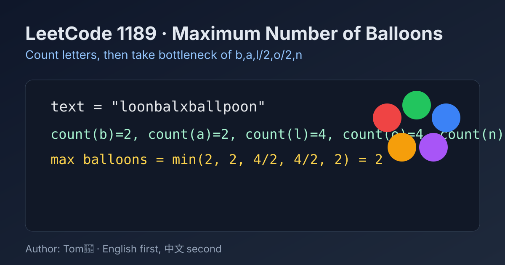

LeetCode 1189: Maximum Number of Balloons (Frequency Bottleneck Counting)
LeetCode 1189StringCountingGreedyToday we solve LeetCode 1189 - Maximum Number of Balloons.
Source: https://leetcode.com/problems/maximum-number-of-balloons/

English
Problem Summary
Given a string text, return the maximum number of times we can form the word "balloon" using characters from text. Each character can be used at most once.
Key Insight
This is a pure counting problem. For one "balloon", we need:
b:1, a:1, l:2, o:2, n:1.
So the answer is the minimum among: cnt['b'], cnt['a'], cnt['l']/2, cnt['o']/2, cnt['n'].
Algorithm
1) Count frequency of all letters in text.
2) Compute candidates for required letters (divide l and o by 2).
3) Return the minimum candidate.
Complexity Analysis
Time: O(n), where n is text.length.
Space: O(1) (fixed-size alphabet array/map).
Reference Implementations (Java / Go / C++ / Python / JavaScript)
class Solution {
public int maxNumberOfBalloons(String text) {
int[] cnt = new int[26];
for (char c : text.toCharArray()) {
cnt[c - 'a']++;
}
return Math.min(
Math.min(cnt['b' - 'a'], cnt['a' - 'a']),
Math.min(Math.min(cnt['l' - 'a'] / 2, cnt['o' - 'a'] / 2), cnt['n' - 'a'])
);
}
}func maxNumberOfBalloons(text string) int {
cnt := make([]int, 26)
for _, ch := range text {
cnt[ch-'a']++
}
minVal := cnt['b'-'a']
if cnt['a'-'a'] < minVal { minVal = cnt['a'-'a'] }
if cnt['l'-'a']/2 < minVal { minVal = cnt['l'-'a']/2 }
if cnt['o'-'a']/2 < minVal { minVal = cnt['o'-'a']/2 }
if cnt['n'-'a'] < minVal { minVal = cnt['n'-'a'] }
return minVal
}class Solution {
public:
int maxNumberOfBalloons(string text) {
vector<int> cnt(26, 0);
for (char c : text) cnt[c - 'a']++;
return min({
cnt['b' - 'a'],
cnt['a' - 'a'],
cnt['l' - 'a'] / 2,
cnt['o' - 'a'] / 2,
cnt['n' - 'a']
});
}
};class Solution:
def maxNumberOfBalloons(self, text: str) -> int:
cnt = [0] * 26
for ch in text:
cnt[ord(ch) - ord('a')] += 1
return min(
cnt[ord('b') - ord('a')],
cnt[ord('a') - ord('a')],
cnt[ord('l') - ord('a')] // 2,
cnt[ord('o') - ord('a')] // 2,
cnt[ord('n') - ord('a')],
)var maxNumberOfBalloons = function(text) {
const cnt = new Array(26).fill(0);
for (const ch of text) {
cnt[ch.charCodeAt(0) - 97]++;
}
return Math.min(
cnt['b'.charCodeAt(0) - 97],
cnt['a'.charCodeAt(0) - 97],
Math.floor(cnt['l'.charCodeAt(0) - 97] / 2),
Math.floor(cnt['o'.charCodeAt(0) - 97] / 2),
cnt['n'.charCodeAt(0) - 97]
);
};中文
题目概述
给定字符串 text，返回最多能拼出多少个 "balloon"。每个字符最多使用一次。
核心思路
这是典型的频次瓶颈问题。拼 1 个 "balloon" 需要：
b:1, a:1, l:2, o:2, n:1。
所以答案是 cnt[b]、cnt[a]、cnt[l]/2、cnt[o]/2、cnt[n] 这五者的最小值。
算法步骤
1）遍历字符串统计每个字母出现次数。
2）对 l 和 o 频次除以 2。
3）返回上述五项的最小值。
复杂度分析
时间复杂度：O(n)。
空间复杂度：O(1)（固定 26 个字母计数）。
多语言参考实现（Java / Go / C++ / Python / JavaScript）
class Solution {
public int maxNumberOfBalloons(String text) {
int[] cnt = new int[26];
for (char c : text.toCharArray()) {
cnt[c - 'a']++;
}
return Math.min(
Math.min(cnt['b' - 'a'], cnt['a' - 'a']),
Math.min(Math.min(cnt['l' - 'a'] / 2, cnt['o' - 'a'] / 2), cnt['n' - 'a'])
);
}
}func maxNumberOfBalloons(text string) int {
cnt := make([]int, 26)
for _, ch := range text {
cnt[ch-'a']++
}
minVal := cnt['b'-'a']
if cnt['a'-'a'] < minVal { minVal = cnt['a'-'a'] }
if cnt['l'-'a']/2 < minVal { minVal = cnt['l'-'a']/2 }
if cnt['o'-'a']/2 < minVal { minVal = cnt['o'-'a']/2 }
if cnt['n'-'a'] < minVal { minVal = cnt['n'-'a'] }
return minVal
}class Solution {
public:
int maxNumberOfBalloons(string text) {
vector<int> cnt(26, 0);
for (char c : text) cnt[c - 'a']++;
return min({
cnt['b' - 'a'],
cnt['a' - 'a'],
cnt['l' - 'a'] / 2,
cnt['o' - 'a'] / 2,
cnt['n' - 'a']
});
}
};class Solution:
def maxNumberOfBalloons(self, text: str) -> int:
cnt = [0] * 26
for ch in text:
cnt[ord(ch) - ord('a')] += 1
return min(
cnt[ord('b') - ord('a')],
cnt[ord('a') - ord('a')],
cnt[ord('l') - ord('a')] // 2,
cnt[ord('o') - ord('a')] // 2,
cnt[ord('n') - ord('a')],
)var maxNumberOfBalloons = function(text) {
const cnt = new Array(26).fill(0);
for (const ch of text) {
cnt[ch.charCodeAt(0) - 97]++;
}
return Math.min(
cnt['b'.charCodeAt(0) - 97],
cnt['a'.charCodeAt(0) - 97],
Math.floor(cnt['l'.charCodeAt(0) - 97] / 2),
Math.floor(cnt['o'.charCodeAt(0) - 97] / 2),
cnt['n'.charCodeAt(0) - 97]
);
};
Comments